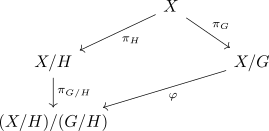

cancelling and collapse to the orbits
Proposition
Let $(X, \mathcal{T}_X)$ be a topological space, $\triangle: G \times X \rightarrow X$ a topological group action for a topological group $G$ and $H \trianglelefteq G$ a normal subgroup. Then for the quotient group acting on the orbital collapse,
there exists a canonical homeomorphism
Proof
welldefined
Let $x \sim x'$, then there exists an $g \in G$ such that $g \cdot x = x'$. But then, for $x_1 \in [x], x_2 \in [x']$ there exist an $h_1,h_2 \in H$ such that
Therefore, we have to show, that there exists an $g'H \in G/H$ such that
But
and therefore, $g \cdot h_2^{-1} \cdot h_1 H = gH$ is the desired element. probably to much (?)
injective
Suppose there exist $x,x' \in X$ such that
then there exists an $gH$ such that
and then by assumption an $h \in H$ such that
hence $[x]_G = [x']_G$
surjective
follows from definition
continuous
follows from the commutativity of the following diagram

where $\varphi$ is continuous if and only if $\pi_{G/H} \circ \pi_H: X \rightarrow (X/H)/(G/H)$ is continuous. This is the case as the composition of continuous maps is continuous
open
follows from commutativity of the following diagram

where for an open set $O \subseteq X/G$, the preimage under $\pi_H$ is open. Furthermore, $\pi_H, \pi_{G/H}$ are open maps, so $\pi_{G/H} \circ \pi_{H} \circ \pi_{G}^{-1}[O]$ is open